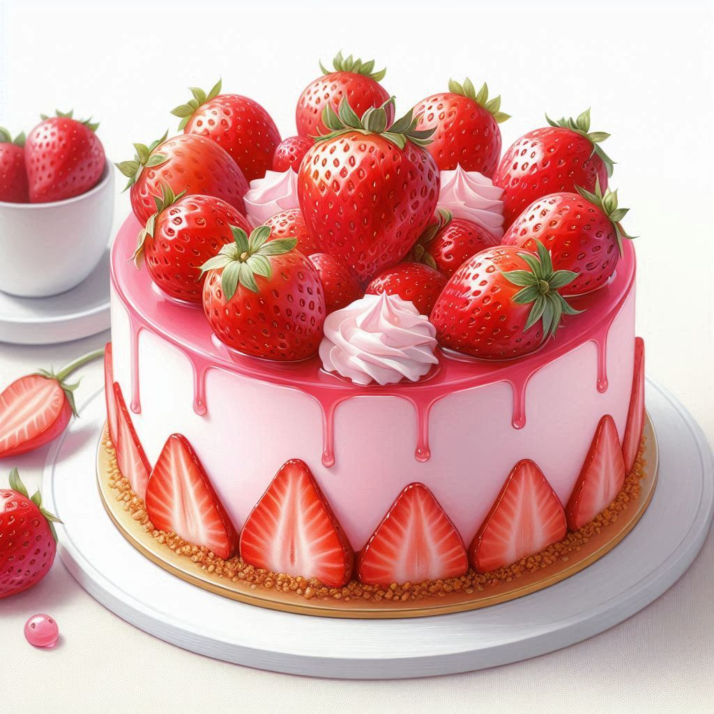

Strawberry Cake

Description:
Strawberry cake is a delightful dessert showcasing the taste of fresh strawberries. The cake itself can be prepared in numerous ways, featuring strawberries throughout: incorporated into the batter, adorning the top of the cake, nestled between layers, or even within the frosting. Both fresh and frozen strawberries can be used, with fresh offering a brighter flavor and frozen providing a sweeter option. Bakers may also use strawberry-flavored gelatin to tint the batter a delicate pink. Strawberry cake is typically served chilled, allowing the flavors to meld and creating a refreshing summer treat.
Ingredients:
For the Cake:
- Dry Ingredients:
- All-purpose flour (or cake flour for a lighter texture)
- Baking powder
- Salt
- Wet Ingredients:
- Sugar
- Butter (softened)
- Eggs (room temperature)
- Milk (room temperature)
- Oil (vegetable or canola)
- Vanilla extract
- Strawberries
For the Frosting (Optional):
- Powdered sugar
- Milk or cream cheese
- Vanilla extract
- Fresh strawberries (optional)
Steps:
- Preheat the oven: The temperature will vary depending on the recipe, so check the specific instructions. Generally, it's around 350°F (175°C).
- Prepare the pan: Grease and flour a cake pan.
- Whisk dry ingredients: In a medium bowl, whisk together the flour, baking powder, and salt.
- Cream butter and sugar: In a large bowl, cream together the softened butter and sugar until light and fluffy.
- Beat in eggs one at a time: Add the eggs one at a time, beating well after each addition.
- Alternately add wet and dry ingredients: Begin and end with the dry ingredients, alternating with the milk and oil. Mix until just combined, then stir in the vanilla extract.
- Fold in strawberries: Gently fold the sliced strawberries into the batter. Be careful not to overmix.
- Pour batter into pan: Pour the batter into the prepared cake pan.
- Bake: Bake the cake for the time specified in the recipe, typically around 30-40 minutes. A toothpick inserted into the center should come out clean.
- Cool the cake: Let the cake cool completely in the pan before frosting.
- Make glaze or frosting (optional): While the cake cools, prepare your glaze or frosting according to the recipe.
- Frost the cake: Once cool, frost the cake with your desired glaze or frosting. Decorate with additional fresh strawberries if you like.